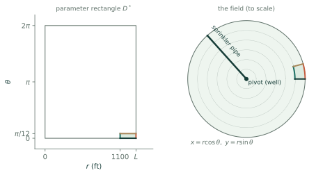

Linear map \(T(\mathbf u)=A\mathbf u\): area is multiplied by \(|\det A|\)
Enter fractions, decimals, pi, e, sqrt(...), sin(...), cos(...), exp(...), or log(...). Use ^ for powers and radians for angles. Vectors and bounds use commas. Decimal answers are checked to two decimal places (answers smaller than 0.1 need two significant digits); exact forms such as 6pi sqrt(37) are always fine. LaTeX such as \frac{1}{2}, \sqrt{2}, \pi, and \phi is also accepted. Equivalent expressions are accepted; potential functions may differ by a constant. Units are provided beside each input.
Hints and solutions are local worked guidance. They do not send messages to an AI service. Your inputs and notes stay in this browser; this is an ungraded practice site.
Fly over western Kansas and the farmland is covered with green circles. About 90% of the state’s irrigated acreage is watered by center pivots: a long sprinkler pipe on wheels that rotates around a well at its centre. The outer nozzles sweep far more ground than the inner ones, so they cannot all be the same size.
Building the model
1From the real world
Irrigated area in the worked example: \(128\) acres; \(1\) acre \(=43{,}560\) ft2
System flow: \(650\) gpm
Center pivots water about 90% of irrigated acreage in Kansas
The irrigated area is one full circle of radius \(L\), so \(\pi L^2=128\times43{,}560\) ft2 and \(L\approx1332\) ft
Every part of the field receives the same depth of water
Nozzles are spaced \(10\) ft apart; each waters a ring \(10\) ft wide centred on it
The pipe turns once every \(24\) hours
3So the model is
Polar map \(T(r,\theta)=(r\cos\theta,\ r\sin\theta)\) on \(D^*=[0,L]\times[0,2\pi]\)
Water per unit time is proportional to the area watered

The polar map sends the \((r,\theta)\) rectangle (left) onto the circular field (right). The shaded strip is the outer span \(1100\le r\le L\) over one hour; edges are matched by colour.
First, on paper
Each point of the field is \(T(r,\theta)=(r\cos\theta,r\sin\theta)\) with \((r,\theta)\) in \(D^*=[0,L]\times[0,2\pi]\). If the pivot turns once every 24 hours, sketch the ground watered in one hour by the outer span \(1100\le r\le L\), that is, the image of \([1100,L]\times[0,\pi/12]\), and say what each of the four edges of the rectangle becomes. Compute \(\partial(x,y)/\partial(r,\theta)\) from the \(2\times2\) determinant. Explain why the points where \(T\) fails to be one-to-one do not spoil \(\iint_D dA=\int_0^{2\pi}\!\int_0^L r\,dr\,d\theta\). Before part (c), predict: does the outer half of the pipe water more or less than half the field?
aOn \(D^*=[0,L]\times[0,2\pi]\), which inputs share their image with a different input?
A step in the right direction
bA nozzle at distance \(r\) waters the ring \(r-5\le\rho\le r+5\) ft. For uniform depth its flow must be the system flow times (ring area)/(field area). Enter its flow as a function of r.
A step in the right direction
cWhat fraction of the total flow goes to nozzles on the outer half of the pipe, L/2 ≤ r ≤ L?
A step in the right direction
View full solution +
Follow the reasoning
\(L=\sqrt{128\cdot43{,}560/\pi}\approx1332\) ft. The edge \(r=1100\) becomes an arc of radius 1100 ft and \(r=L\) an arc of radius \(L\), both through \(15^\circ\); \(\theta=0\) becomes the radial segment from 1100 to \(L\) on the positive \(x\)-axis and \(\theta=\pi/12\) the segment at \(15^\circ\). The image is a curved wedge of an annulus with area \(\tfrac{\pi}{24}(L^2-1100^2)\approx73{,}900\) ft2.
The whole edge \(r=0\) collapses to the pivot, and the edges \(\theta=0\) and \(\theta=2\pi\) land on the same spoke. Everywhere else \(T\) is one-to-one. The repeated points form a single point and a segment, which have zero area, so the theorem still applies; equivalently, delete them and nothing changes.
A nozzle serving \(r-5\le\rho\le r+5\) waters \(\int_0^{2\pi}\!\int_{r-5}^{r+5}\rho\,d\rho\,d\theta=20\pi r\) ft2 of the \(128\cdot43{,}560\) ft2 field, so it needs \(650\cdot20\pi r/(128\cdot43{,}560)\approx0.00732\,r\) gpm, linear in \(r\): about 9.5 gpm at 1300 ft but only 0.7 gpm at 100 ft.
The outer half gets \(\int_{L/2}^L r\,dr\Big/\int_0^L r\,dr=\dfrac{L^2-L^2/4}{L^2}=\dfrac34\) of the water, because the factor \(r\) weights the outer rings more.
Final answers
a. All inputs with \(r=0\) (they all give the pivot), and each pair \((r,0)\), \((r,2\pi)\) (the same spoke).
b.\(\frac{325 \pi r}{139392}\) gpm
c.\(\frac{3}{4}\)
Discussion
In one revolution a nozzle at radius r waters a ring of area 2πr times its width, because the area element is r dr dθ. All nozzles finish their rings in the same time, so the outer nozzles must deliver water at a rate proportional to r. If the soil cannot absorb water that fast, the extra runs off, which is why runoff shows up at the outer edge first.
Think it through
The published guide says runoff problems usually appear at the outer edge of a pivot. Use the Jacobian to explain why the outer nozzles must pour water onto the ground faster.
Saved on this browser · Discussion prompt, not automatically graded
In 2004, Andre Geim and Konstantin Novoselov in Manchester peeled single layers of carbon atoms off graphite, the stuff of pencil lead, and won the 2010 Nobel Prize in Physics. The Nobel committee pictured a 1 m² graphene hammock that could hold a cat yet weigh less than one of its whiskers. That weight comes from counting atoms, one honeycomb cell at a time.
Building the model
1From the real world
Carbon–carbon distance: \(0.142\) nm
Two carbon atoms per unit cell
Published cell area \(0.052\) nm2; density \(0.77\) mg/m2
Lattice vectors \(\mathbf a_1=(a,0)\) and \(\mathbf a_2=(\tfrac a2,\tfrac{\sqrt3}{2}a)\)
\(T(u,v)=u\,\mathbf a_1+v\,\mathbf a_2\); the unit cell is \(T([0,1]^2)\)
The graphene model: carbon atoms (dots) 0.142 nm apart, lattice vectors \(\mathbf a_1,\mathbf a_2\), and one unit cell (shaded) containing two atoms.
First, on paper
Find the images of the four corners of the unit square under \(T\) and sketch the cell \(T([0,1]^2)\). Write \(T\) as a matrix. The cell is bounded by the four lines \(y=0\), \(y=\tfrac{\sqrt3}{2}a\), \(y=\sqrt3\,x\), and \(y=\sqrt3\,(x-a)\): show that in \((u,v)\) these become the sides of the square \(0\le u\le1\), \(0\le v\le1\). Explain why \(T\) is one-to-one and onto \(\mathbb R^2\), compute \(\partial(u,v)/\partial(x,y)\) for the inverse map, and check that it is the reciprocal of \(\det T\). Finally, count the carbon atoms in a 1 m² hammock.
aFind the area of one unit cell of graphene (the image of the unit square), in nm².
A step in the right direction
bCrystallographers use the inverse map. Measuring \(x\) and \(y\) in units of \(a\) (so \(a=1\)), enter \(T^{-1}(x,y)=(u,v)\).
A step in the right direction
cWhich of these maps is not one-to-one on all of the plane?
A step in the right direction
View full solution +
Follow the reasoning
\(a=\sqrt3\times0.142=0.2460\) nm. \(T(u,v)=u\,\mathbf a_1+v\,\mathbf a_2\) has matrix \(A=\begin{pmatrix}a&a/2\\0&\tfrac{\sqrt3}{2}a\end{pmatrix}\). Corners: \((0,0)\mapsto(0,0)\), \((1,0)\mapsto(a,0)\), \((1,1)\mapsto(\tfrac32a,\tfrac{\sqrt3}{2}a)\), \((0,1)\mapsto(\tfrac a2,\tfrac{\sqrt3}{2}a)\): a rhombus with \(60^\circ\) and \(120^\circ\) angles.
\(\det A=\tfrac{\sqrt3}{2}a^2=\tfrac{3\sqrt3}{2}(0.142)^2\approx0.0524\) nm2, matching the published 0.052 nm2.
With \(a=1\): \(v=2y/\sqrt3\) and \(u=x-v/2=x-y/\sqrt3\). This formula works for every \((x,y)\), so \(T\) is onto, and it gives only one \((u,v)\), so \(T\) is one-to-one. The lines \(y=0,\ y=\tfrac{\sqrt3}{2}\) become \(v=0,\ v=1\), and \(y=\sqrt3x,\ y=\sqrt3(x-1)\) become \(u=0,\ u=1\). The inverse has \(\partial(u,v)/\partial(x,y)=1\cdot\tfrac{2}{\sqrt3}-(-\tfrac1{\sqrt3})\cdot0=\tfrac{2}{\sqrt3}=1/\det A\).
\(S\) has inverse \(u=\tfrac{x+y}2,\ v=\tfrac{x-y}2\); \(G\) has inverse \(u=x,\ v=y-x^3\). Only \(F\) fails: \(F(1,0)=F(-1,0)=(1,0)\).
Two atoms per cell give \(2/(5.24\times10^{-20}\text{ m}^2)\approx3.8\times10^{19}\) atoms in 1 m2, and at 0.77 mg per m2 the hammock weighs less than a milligram.
A linear map stretches every region by the same factor |det A|, so every cell of the lattice has the same area, 0.052 nm², and holds two atoms. The number of atoms in any large sheet is its area divided by the cell area, times two, and the mass follows. The sheet of paper has no such repeating cell, so no single determinant describes it.
Think it through
A sheet of graphene and a sheet of paper both cover 1 m². Why is the cell area, the determinant of one small linear map, all you need to know to weigh the graphene sheet?
Saved on this browser · Discussion prompt, not automatically graded
In July 2020, comet NEOWISE was a naked-eye sight in the evening and morning skies of the Northern Hemisphere. It had passed the Sun at only 0.29 AU on July 3 and was heading back out on an orbit so stretched that it is almost a parabola. Celestial mechanicians use a remarkable map, due to Levi-Civita, that turns such orbits into straight lines.
Building the model
1From the real world
Perihelion distance of NEOWISE: \(q=0.2947\) AU
Eccentricity \(0.99918\); perihelion 2020 July 3.68
The orbit is an exact parabola with the Sun at its focus; the planets’ pulls are ignored
Kepler’s second law: the Sun–comet line sweeps area at the constant rate \(\pi\sqrt{2q}\) AU2 per year (this uses \(GM_\odot=4\pi^2\) AU3/yr2)
1 year \(=365.25\) days
3So the model is
Sun at the origin, perihelion at \((q,0)\), distances in AU
Levi-Civita map \(T(u,v)=(u^2-v^2,\ 2uv)\)
Swept region \(D\): bounded by the Sun–perihelion segment, the orbit, and the Sun–comet segment when the comet is \(1\) AU from the Sun
The model: in the \(uv\)-plane the line \(u=\sqrt q\) (left); in the \(xy\)-plane the comet’s parabola with the Sun at its focus and the region \(D\) swept from perihelion until the comet is 1 AU from the Sun (right).
First, on paper
Show that \(T(-u,-v)=T(u,v)\); what does this say about whether \(T\) is one-to-one on the plane? Writing \((u,v)=(\varrho\cos\psi,\varrho\sin\psi)\), show that \(T\) squares the distance from the origin and doubles the angle; use this to explain why \(T\) is one-to-one on the first quadrant and sends rays to rays. Find the image of each edge of the unit square \([0,1]^2\) (two are parabolas: eliminate the parameter) and sketch it. Check that the line \(u=\sqrt q\) becomes the comet’s parabola. The Sun–comet line sweeps a region \(D\) from perihelion until the comet is 1 AU from the Sun; find the vertices and side equations of the region \(D^*\) that \(T\) maps onto \(D\), choose an order of integration, and state the hypotheses of the Change of Variables Theorem and check each one.
aEnter \(\dfrac{\partial(x,y)}{\partial(u,v)}\).
A step in the right direction
bFind the area of the image of the unit square \([0,1]^2\).
A step in the right direction
cUsing Kepler’s second law, how many days after perihelion does the model comet reach 1 AU from the Sun?
A step in the right direction
View full solution +
Follow the reasoning
\(T(-u,-v)=((-u)^2-(-v)^2,2(-u)(-v))=T(u,v)\), so every point except the origin has two preimages: \(T\) is not one-to-one on \(\mathbb R^2\). In polar form, \(u^2-v^2=\varrho^2\cos2\psi\) and \(2uv=\varrho^2\sin2\psi\): radius squared, angle doubled. On the first quadrant \(0\le\psi\le\pi/2\) the doubled angle covers \([0,\pi]\) only once, so \(T\) is one-to-one there, and the ray at angle \(\psi\) goes to the ray at angle \(2\psi\).
Edges of the unit square: \(v=0\mapsto(u^2,0)\), the segment \([0,1]\); \(u=0\mapsto(-v^2,0)\), the segment \([-1,0]\); \(u=1\mapsto x=1-y^2/4\); \(v=1\mapsto x=y^2/4-1\), for \(0\le y\le2\). Both parabolas have their focus at the origin, where the Sun sits. In general \(u=c\) gives \(x=c^2-y^2/(4c^2)\), a parabola with focus at the origin and vertex \((c^2,0)\), so \(u=\sqrt q\) is the comet’s orbit with perihelion \((q,0)\).
\(J=(2u)(2u)-(-2v)(2v)=4(u^2+v^2)\ge0\), zero only at the origin. Area of the image of the square: \(\int_0^1\!\int_0^1 4(u^2+v^2)\,du\,dv=\tfrac43+\tfrac43=\tfrac83\) AU2.
Distance from the Sun is \(x^2+y^2=(u^2+v^2)^2\), so \(r=u^2+v^2\). On the orbit \(u=\sqrt q\), \(r=1\) gives \(v=\sqrt{1-q}\). The Sun–perihelion segment comes from \(v=0\), the orbit arc from \(u=\sqrt q\), and the Sun–comet segment from the ray \(v=ku\) with \(k=\sqrt{(1-q)/q}\). So \(D^*\) is the triangle \(0\le u\le\sqrt q,\ 0\le v\le ku\). Hypotheses: \(T\) is \(C^1\), one-to-one on the first quadrant, \(T(D^*)=D\), and \(J\ne0\) except at one point.
Area \(=\int_0^{\sqrt q}\!\int_0^{ku}4(u^2+v^2)\,dv\,du=\int_0^{\sqrt q}4u^3(k+k^3/3)\,du=q^2(k+k^3/3)=\tfrac{qk(2q+1)}{3}\approx0.2416\) AU2 for \(q=0.2947\). Dividing by \(\pi\sqrt{2q}\approx2.412\) AU2/yr gives \(0.1001\) yr \(\approx36.6\) days, so the model reaches 1 AU around August 9; JPL’s ephemeris gives 36.60 days.
Final answers
a.\(4 u^{2} + 4 v^{2}\)
b.\(\frac{8}{3}\) AU2
c.\(\frac{114.914312372045}{\pi}\) days
Discussion
Near the Sun the speed is set by v² = GM(2/r − 1/a). With a ≈ 358 AU, the term 1/a ≈ 0.003 per AU is tiny next to 2/r ≥ 2 per AU, so inside 1 AU the ellipse and the parabola differ by about 0.1% in speed, and the sweep rates agree almost exactly. Far from the Sun the two curves part ways: the parabola escapes to infinity, while the real comet turns around about 717 AU out and returns in some 6800 years.
Think it through
JPL’s ephemeris puts the real NEOWISE 1 AU from the Sun about 36.60 days after perihelion, within an hour of the model. The real orbit is an ellipse that takes about 6800 years to go around. Why does a parabola work so well here, and where would it fail badly?
Saved on this browser · Discussion prompt, not automatically graded
Problem 04Core
How a computer makes bell curves
Weather ensembles, bank stress tests, and simulated particle collisions all need random numbers that follow the bell-shaped normal distribution, but a computer’s basic generator only produces numbers spread evenly between 0 and 1. In 1958 George Box and Mervin Muller found a short recipe that bends a uniform square into a perfect two-dimensional bell curve. It is a change of variables.
Building the model
1From the real world
Box–Muller: from uniform \(u,v\) in \((0,1)\), \(x=\sqrt{-2\ln u}\cos2\pi v\), \(y=\sqrt{-2\ln u}\sin2\pi v\)
\((u,v)\) is spread uniformly over the unit square, so the probability of a set of inputs is its area
3So the model is
\(T(u,v)=(x,y)\) on \((0,1]\times[0,1]\)
Probability that \(T(u,v)\in D\) equals the area of the set of \((u,v)\) that land in \(D\)
Equal-area strips of the \((u,v)\) square (left) become the rings and wedges of the plane (right); rings near the centre are thin, so points crowd there.
First, on paper
Write the inverse map \((x,y)\mapsto(u,v)\) (use polar coordinates of \((x,y)\)). Say where the map fails to be one-to-one on \((0,1]\times[0,1]\) and why that is harmless, and note what happens to \(T(u,v)\) as \(u\to0\). Explain the probability rule: the chance that \(T(u,v)\) lands in a region \(D\) equals the area of the preimage \(D^*\), and write that area as \(\iint_D\left|\partial(u,v)/\partial(x,y)\right|dx\,dy\), transforming region, integrand, and area element together. Then scale: \(X=\sigma_1x\), \(Y=\sigma_2y\) multiplies areas by \(\sigma_1\sigma_2\). Use this diagonal scaling and then polar coordinates to show that the chance of landing in the error ellipse \(X^2/\sigma_1^2+Y^2/\sigma_2^2\le4\) is the same as in part (c).
aEnter the forward Jacobian \(\dfrac{\partial(x,y)}{\partial(u,v)}\) (it may be negative).
A step in the right direction
bThe points \((x,y)\) have density \(\left|\dfrac{\partial(u,v)}{\partial(x,y)}\right|\). Enter it as a function of x and y.
A step in the right direction
cWhat is the probability that a generated point lies within distance 2 of the origin?
A step in the right direction
View full solution +
Follow the reasoning
With \(R=\sqrt{-2\ln u}\): \(x_u=-\dfrac{\cos2\pi v}{uR}\), \(x_v=-2\pi R\sin2\pi v\), \(y_u=-\dfrac{\sin2\pi v}{uR}\), \(y_v=2\pi R\cos2\pi v\), so \(\dfrac{\partial(x,y)}{\partial(u,v)}=-\dfrac{2\pi}{u}(\cos^2+\sin^2)=-\dfrac{2\pi}{u}\). The minus sign means orientation is reversed; area scaling uses \(2\pi/u\).
Inverse: \(u=e^{-(x^2+y^2)/2}\), \(v=\theta/(2\pi)\) where \(\theta\) is the polar angle of \((x,y)\). The map is one-to-one except that \(u=1\) sends every \(v\) to the origin and \(v=0\), \(v=1\) give the same ray: zero area. As \(u\to0\) the radius \(\sqrt{-2\ln u}\to\infty\), so the image is the whole plane (an improper region).
By the reciprocal rule, \(\left|\dfrac{\partial(u,v)}{\partial(x,y)}\right|=\dfrac{u}{2\pi}=\dfrac{1}{2\pi}e^{-(x^2+y^2)/2}=\dfrac{e^{-x^2/2}}{\sqrt{2\pi}}\cdot\dfrac{e^{-y^2/2}}{\sqrt{2\pi}}\): two independent standard normal numbers.
\(P=\iint_{x^2+y^2\le4}\dfrac{e^{-(x^2+y^2)/2}}{2\pi}dA=\int_0^{2\pi}\!\int_0^2\dfrac{e^{-r^2/2}}{2\pi}r\,dr\,d\theta=1-e^{-2}\approx0.865\). Equivalently, the preimage is \(e^{-2}\le u\le1\), of area \(1-e^{-2}\).
For the ellipse, \(X=\sigma_1x\), \(Y=\sigma_2y\) has \(J=\sigma_1\sigma_2\), and the density \(\dfrac{1}{2\pi\sigma_1\sigma_2}e^{-(X^2/\sigma_1^2+Y^2/\sigma_2^2)/2}\) times \(\sigma_1\sigma_2\) returns the disk integral above: again \(1-e^{-2}\). A two-dimensional “2-sigma” ellipse holds only 86.5%, not the familiar one-dimensional 95%.
Probability, like area, cannot be negative. The sign of the Jacobian only records that the map reverses orientation (it flips the square over as it bends it). Without the absolute value the density would be negative and the total probability would come out as −1.
Think it through
The forward Jacobian was negative. Why does the probability density use its absolute value, and what would go wrong without it?
Saved on this browser · Discussion prompt, not automatically graded
Problem 05Extension
Why Greenland looks as big as Africa
On the familiar Mercator world map, Greenland looks about as large as Africa, yet the Democratic Republic of the Congo alone, on the equator, is slightly bigger than Greenland. Gerardus Mercator designed his map so that sailors could steer by straight lines, and that choice stretches areas near the poles.
Building the model
1From the real world
Greenland: \(2{,}166{,}086\) km2; Democratic Republic of the Congo: \(2{,}344{,}858\) km2
Greenland is represented by latitude \(72^\circ\) N and DR Congo by the equator
3So the model is
Map \((\lambda,\phi)\mapsto(x,y)\) on \(-\pi<\lambda<\pi\), \(-\pi/2<\phi<\pi/2\)
Sphere area element: \(\cos\phi\,d\lambda\,d\phi\)
Mercator’s map with parallels every \(15^\circ\): they spread apart toward the poles. Shaded: the latitude bands of Greenland and of DR Congo.
First, on paper
With \(R=1\), the sphere’s area element at longitude \(\lambda\) and latitude \(\phi\) is \(\cos\phi\,d\lambda\,d\phi\). Explain why the ratio (map Jacobian)/\(\cos\phi\) is the map’s area scale factor. Is the Mercator map one-to-one on \((-\pi,\pi)\times(-\pi/2,\pi/2)\), and what happens to the poles? Repeat the Jacobian calculation for the cylindrical equal-area map \(x=\lambda\), \(y=\sin\phi\) and explain its name.
aEnter the Mercator Jacobian \(\dfrac{\partial(x,y)}{\partial(\lambda,\phi)}\) as a function of phi.
A step in the right direction
bBy what factor does the Mercator map enlarge areas at latitude \(72^\circ\)?
A step in the right direction
cPlacing Greenland at latitude 72° and DR Congo at the equator, how many times larger than DR Congo does Greenland appear on the Mercator map?
A step in the right direction
View full solution +
Follow the reasoning
\(x_\lambda=1\), \(x_\phi=0\), \(y_\lambda=0\), and \(y_\phi=\dfrac{\tfrac12\sec^2(\pi/4+\phi/2)}{\tan(\pi/4+\phi/2)}=\dfrac{1}{\sin(\pi/2+\phi)}=\sec\phi\), so \(J=\sec\phi\).
A small patch of Earth has area \(\cos\phi\,\Delta\lambda\,\Delta\phi\) and its image has area about \(|J|\,\Delta\lambda\,\Delta\phi\), so areas are scaled by \(\sec\phi/\cos\phi=\sec^2\phi\), as Snyder states. At \(72^\circ\) this is \(\approx10.47\). The map is one-to-one on the open rectangle, but \(y\to\pm\infty\) at the poles, which never appear.
Apparent ratio: \(\dfrac{2{,}166{,}086\times10.47}{2{,}344{,}858\times1}\approx9.7\). Greenland looks almost ten times larger than DR Congo, although it is about 8% smaller.
For \(y=\sin\phi\), \(J=\cos\phi\), exactly the sphere’s factor: the areal scale is 1 everywhere, so the map is equal-area (at the price of squashed shapes near the poles).
No. A map that preserves angles stretches lengths equally in all directions at each point, by some factor k, so it multiplies area by k². Preserving area too would force k = 1, so the map would preserve all lengths, and a sphere cannot be flattened without changing lengths (its curvature is not zero). Every world map must trade shape against area.
Think it through
Mercator’s map preserves angles, which made it ideal for navigation. Can a map from the sphere to the plane preserve both angles and areas? What does the Jacobian say?
Saved on this browser · Discussion prompt, not automatically graded
Field notes
Where the numbers come from
Published values are snapshots. Assumed geometry and analytical fields are labeled in each problem.
Published extension guidance and worked example
Considerations for Nozzle Package Selection for Center Pivots (K-State L908)
D. H. Rogers and M. Alam, Kansas State University Research and Extension publication L908, December 2008. The 128-acre, 650 gpm system is the publication’s worked example, not a particular farm. Treating the irrigated area as one full circle and the nozzle spacing are assumptions.
Quantity
Published value
Share of Kansas irrigated acreage watered by center pivots
approximately 90 percent
Worked example: irrigated area
128 acres
Worked example: system flow
650 gpm
Worked example: system irrigation capacity
0.27 in/day
Why nozzle rates rise outward
application rate increases with distance from the pivot point as more area is covered by the nozzle
Scientific Background on the Nobel Prize in Physics 2010: Graphene
Class for Physics of the Royal Swedish Academy of Sciences, 2010. The lattice vectors used in the problem follow from the published carbon–carbon distance; the hammock is the document’s own illustration.
JPL Small-Body Database and Horizons: comet C/2020 F3 (NEOWISE)
NASA JPL Solar System Dynamics, orbit solution JPL#31 (epoch 2020-Jul-06), accessed November 17, 2026. Heliocentric distances are from a Horizons vector ephemeris (centre: Sun). 1 au = 149,597,870.7 km.
E. W. Weisstein, MathWorld, accessed November 17, 2026; secondary source for the method of G. E. P. Box and M. E. Muller, Ann. Math. Statist. 29 (1958), 610–611. No measured data are involved.